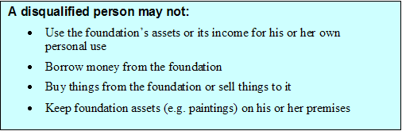

Broadly speaking, the prohibition on self-dealing [Section 4941] means that disqualified persons [Section 4946] - generally the founder and lineal descendants and antecedents (e.g. parents and children), and people under their employment - may not engage in any transactions with the foundation, except to make donations to it or, under limited circumstances, to receive fair market value compensation for services [Section 4941(d)2].
In general, a donor is never permitted to receive an improper benefit from a charity he or she supports. In the private foundation arena, these rules are spelled out in some detail. A few key rules that founders should be aware of:

A disqualified person is permitted to have certain, arm's-length dealings with the foundation. For example, the founder and his/her family may receive reasonable director's fees (provided that they do not receive preferential treatment), and the donor and/or family members may be employed, provided that their compensation is reasonable for work actually performed. Specific situations may require specific legal advice.